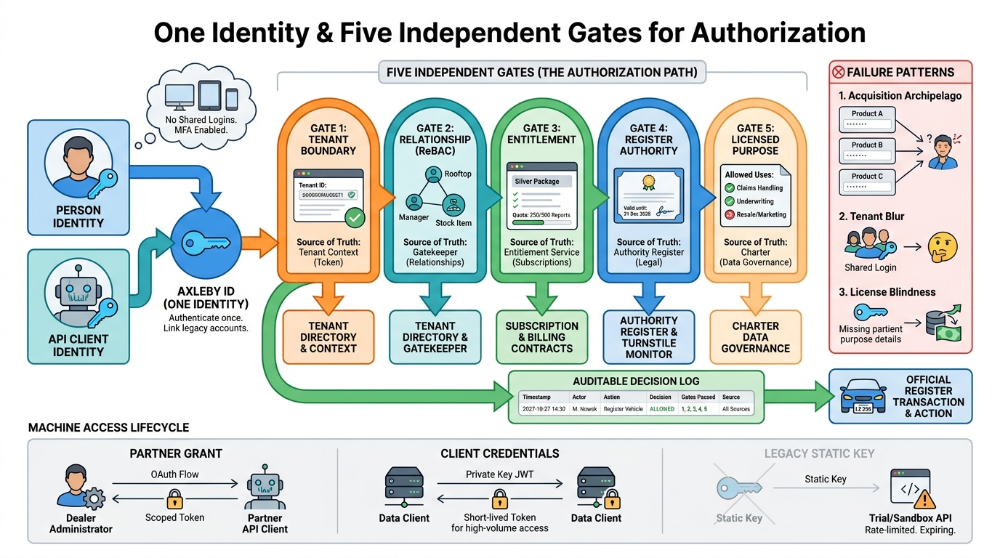

Part V — SAAS: Tenants, Access and the Commercial Model
Who May Do What: Identity, Authorization and Entitlements

Image generated by Google Gemini (gemini-3-pro-image-preview)
Part V — SAAS: Tenants, Access and the Commercial Model

Image generated by Google Gemini (gemini-3-pro-image-preview)